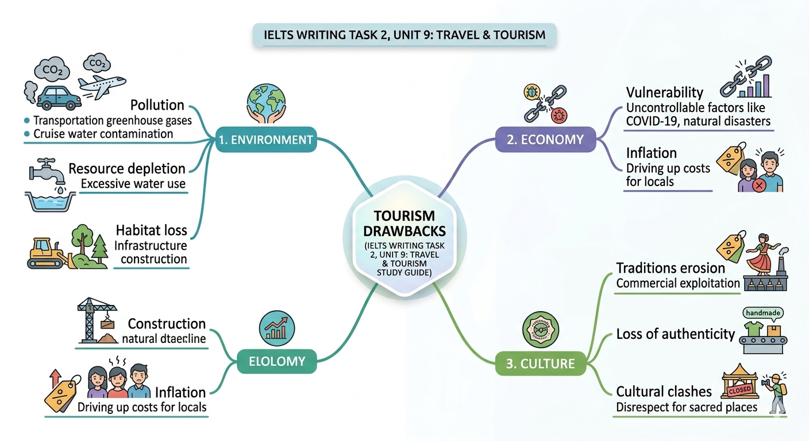

Tổng quan tác hại của Du lịch

ENVIRONMENT
"The transportation sector emits greenhouse gases, while cruise travel contaminates water bodies."
ECONOMY
"Heavy reliance on tourism makes the economy vulnerable to disease outbreaks like COVID-19."
CULTURE
"Commercial interests exploit local customs, leading to a loss of authenticity."
So sánh các khía cạnh tiêu cực (Detailed Analysis)
| Phân loại | Cụm từ then chốt (Key Collocations) | Giải thích chi tiết (Band 8-9 Context) |
|---|---|---|
| Environment | Contaminate water bodies | Sử dụng trong bài về du thuyền (cruise ships) thải rác trực tiếp xuống đại dương, phá hủy hệ sinh thái biển (detrimental effects on marine creatures). |
| Economy | Drive up the cost of living | Khi nhu cầu về dịch vụ tăng cao, giá cả hàng hóa leo thang gây áp lực lạm phát (inflationary pressures) cho cư dân bản địa. |
| Culture | Erode local traditions | Quá trình thương mại hóa văn hóa khiến các phong tục mất đi tính chân thực (loss of authenticity) để phục vụ thị hiếu du khách. |
✍️ Phân tích Sample Paragraph (Band 8.0+)
"I believe the prevalence of cross-border trips brings about both positive and negative effects on society. In terms of economy, with many travelers coming to a country, the demand for housing and food here will likely grow, so local people can earn a great amount of money through providing shelters and selling their traditional cuisines. For instance, Thailand is a country that welcomes millions of travelers from around the world annually, thanks to which the tourism industry here can flourish. Many Thai residents working in this industry now have escaped poverty, avoid unemployment and enjoy a better quality of life."
PRO TIP: TÍNH LIÊN KẾT (COHERENCE)
Để đạt Band 8.0, hãy sử dụng các trạng từ liên kết (In terms of..., For instance...) một cách tự nhiên. Chú ý cách tác giả Phạm Tiến Dũng Gia Sư sử dụng cụm "thanks to which" để mở rộng mệnh đề quan hệ, giúp câu văn trở nên phức tạp và mượt mà hơn.
Thực hành từ vựng (Interactive Practice)
1. Du lịch bằng tàu thủy thường gây ra sự ô nhiễm đối với các nguồn nước. Từ nào sau đây phù hợp nhất?
2. Điền cụm từ: Heavy reliance on tourism can make an economy ________ to uncontrollable factors.
Đáp án chính xác: vulnerable
Teacher's Note từ Phạm Tiến Dũng Gia Sư
"Trong chủ đề Tourism, thay vì dùng từ 'bad' hay 'harmful', hãy nâng cấp lên các cụm như 'detrimental effects', 'environmental degradation' hoặc 'inflationary pressures'. Đây là những chìa khóa giúp bạn chinh phục tiêu chí Lexical Resource ở mức Band cao nhất."